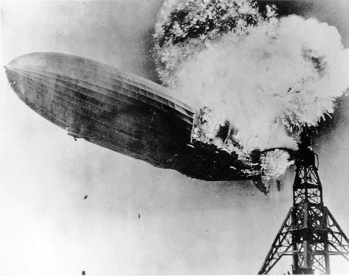
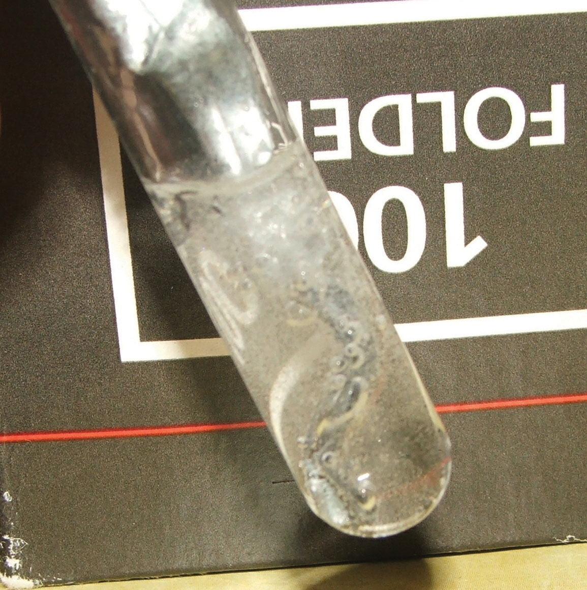

Although yeast has been used for thousands of years, its true nature has been known only for the last two centuries. Yeasts are single-celled fungi. About 1,000 species are recognized, but the most common species is Saccharomyces cerevisiae, which is used in bread making. Other species are used for the fermentation of alcoholic beverages. Some species can cause infections in humans.
Yeasts live primarily on sugars, such as glucose (C6H12O6). They convert glucose into carbon dioxide (CO2) and ethanol (C2H5OH) in a chemical transformation that is represented as follows:
C6H12O6 → 2CO2(g) + 2C2H5OH(ℓ)Bread making depends on the production of carbon dioxide. The gas, which is produced in tiny pockets in bread dough, acts as a leavening agent: it expands during baking and makes the bread rise. Leavened bread is softer, lighter, and easier to eat and chew than unleavened bread. The other major use of yeast, fermentation, depends on the production of ethanol, which results from the same chemical transformation. Some alcoholic beverages, such as champagne, can also be carbonated using the carbon dioxide produced by the yeast.
Yeast is among the simplest life forms on Earth, yet it is absolutely necessary for at least two major food industries. Without yeast to turn dough into bread and juice into wine, these foods and food industries would not exist today.
Chemical change is a central concept in chemistry. The goal of chemists is to know how and why a substance changes in the presence of another substance or even by itself. Because there are tens of millions of known substances, there are a huge number of possible chemical reactions. In this chapter, we will find that many of these reactions can be classified into a small number of categories according to certain shared characteristics.
In science, a lawA general statement that explains a large number of observations. is a general statement that explains a large number of observations. Before being accepted, a law must be verified many times under many conditions. Laws are therefore considered the highest form of scientific knowledge and are generally thought to be inviolable. Scientific laws form the core of scientific knowledge.
One scientific law that provides the foundation for understanding in chemistry is the law of conservation of matterIn any given system that is closed to the transfer of matter (in and out), the amount of matter in the system stays constant.. It states that in any given system that is closed to the transfer of matter (in and out), the amount of matter in the system stays constant. A concise way of expressing this law is to say that the amount of matter in a system is conserved.
What does this mean for chemistry? In any chemical change, one or more initial substances change into a different substance or substances. Both the initial and final substances are composed of atoms because all matter is composed of atoms. According to the law of conservation of matter, matter is neither created nor destroyed, so we must have the same number and type of atoms after the chemical change as were present before the chemical change.
Before looking at explicit examples of the law of conservation of matter, we need to examine the method chemists use to represent chemical changes.
What is the law of conservation of matter?
How does the law of conservation of matter apply to chemistry?
The law of conservation of matter states that in any given system that is closed to the transfer of matter, the amount of matter in the system stays constant
The law of conservation of matter says that in chemical reactions, the total mass of the products must equal the total mass of the reactants.
Express the law of conservation of matter in your own words.
Explain why the concept of conservation of matter is considered a scientific law.
Matter may not be created or destroyed.
Water (H2O) is composed of hydrogen and oxygen. Suppose we imagine a process in which we take some elemental hydrogen (H2) and elemental oxygen (O2) and let them react to make water. The statement
hydrogen and oxygen react to make wateris one way to represent that process, which is called a chemical reactionA representation of a chemical change.. Figure 5.1 "The Formation of Water" shows a rather dramatic example of this very reaction.
Figure 5.1 The Formation of Water
Hydrogen and oxygen combine to form water. Here, the hydrogen gas in the zeppelin SS Hindenburg reacts with oxygen in the air to make water.
Source: Photo courtesy of the US Navy, http://commons.wikimedia.org/wiki/File:Hindenburg_burning.jpg.
To simplify the writing of reactions, we use formulas instead of names when we describe a reaction. We can also use symbols to represent other words in the reaction. A plus sign connects the initial substances (and final substances, if there is more than one), and an arrow (→) represents the chemical change:
H2 + O2 → H2OThis statement is one example of a chemical equationAn abbreviated way of using symbols to represent a chemical change., an abbreviated way of using symbols to represent a chemical change. The substances on the left side of the arrow are called reactantsA substance on the left side of the arrow in a chemical equation., and the substances on the right side of the arrow are called productsA substance on the right side of the arrow in a chemical equation.. It is not uncommon to include a phase label with each formula—(s) for solid, (ℓ) for liquid, (g) for gas, and (aq) for a substance dissolved in water, also known as an aqueous solution. If we included phase labels for the reactants and products, under normal environmental conditions, the reaction would be as follows:
H2(g) + O2(g) → H2O(ℓ)Chemical equations can also be used to describe physical changes. We will see examples of this soon.
This equation is still not complete because it does not satisfy the law of conservation of matter. Count the number of atoms of each element on each side of the arrow. On the reactant side, there are two H atoms and two O atoms; on the product side, there are two H atoms and only one oxygen atom. The equation is not balanced because the number of oxygen atoms on each side is not the same (Figure 5.2 "Balanced—Yes or No?").
Figure 5.2 Balanced—Yes or No?
By counting the atoms of each element, we can see that the reaction is not balanced as written.
To make this chemical equation conform to the law of conservation of matter, we must revise the amounts of the reactants and the products as necessary to get the same number of atoms of a given element on each side. Because every substance has a characteristic chemical formula, we cannot change the chemical formulas of the individual substances. For example, we cannot change the formula for elemental oxygen to O. However, we can assume that different numbers of reactant molecules or product molecules may be involved. For instance, perhaps two water molecules are produced, not just one:
H2(g) + O2(g) → 2H2O(ℓ)The 2 preceding the formula for water is called a coefficientA number that gives the number of molecules of a substance in a balanced chemical equation.. It implies that two water molecules are formed. There are now two oxygen atoms on each side of the equation.
This point is so important that we should repeat it. You cannot change the formula of a chemical substance to balance a chemical reaction! You must use the proper chemical formula of the substance.
Unfortunately, by inserting the coefficient 2 in front of the formula for water, we have also changed the number of hydrogen atoms on the product side as well. As a result, we no longer have the same number of hydrogen atoms on each side. This can be easily fixed, however, by putting a coefficient of 2 in front of the diatomic hydrogen reactant:
2H2(g) + O2(g) → 2H2O(ℓ)Now we have four hydrogen atoms and two oxygen atoms on each side of the equation. The law of conservation of matter is satisfied because we now have the same number of atoms of each element in the reactants and in the products. We say that the reaction is balancedA property of a chemical equation when there are the same number of atoms of each element in the reactants and products. (Figure 5.3 "Balanced—Yes or No?"). The diatomic oxygen has a coefficient of 1, which typically is not written but assumed in balanced chemical equations.
Figure 5.3 Balanced—Yes or No?
By counting the atoms of each element, we can see that the reaction is now balanced.
Proper chemical equations should be balanced. Writing balanced reactions is a chemist’s way of acknowledging the law of conservation of matter.
Is each chemical equation balanced?
Solution
Is each chemical equation balanced?
2Hg(ℓ) + O2(g) → Hg2O2(s)
C2H4(g) + 2O2(g) → 2CO2(g) + 2H2O(ℓ)
Mg(NO3)2(s) + 2Li(s) → Mg(s) + 2LiNO3(s)
How does one balance a chemical equation, starting with the correct formulas of the reactants and products? Basically, a back-and-forth approach is adopted, counting the number of atoms of one element on one side, checking the number of atoms of that element on the other side, and changing a coefficient if necessary. Then check another element, going back and forth from one side of the equation to another, until each element has the same number of atoms on both sides of the arrow. In many cases, it does not matter which element is balanced first and which is balanced last, as long as all elements have the same number of atoms on each side of the equation.
For example, to balance the equation
CH4 + Cl2 → CCl4 + HClwe might choose to count the carbon atoms first, finding that both sides are balanced with one carbon atom. The reactant side has four hydrogen atoms, so the product side must also have four hydrogen atoms. We fix this by putting a 4 in front of the HCl:
CH4 + Cl2 → CCl4 + 4HClNow each side has four hydrogen atoms. The product side has a total of eight chlorine atoms (four from the CCl4 and four from the four molecules of HCl), so we need eight chlorine atoms as reactants. Because elemental chlorine is a diatomic molecule, we need four chlorine molecules to get a total of eight chlorine atoms. We add another 4 in front of the Cl2 reactant:
CH4 + 4Cl2 → CCl4 + 4HClNow we check: each side has one carbon atom, four hydrogen atoms, and eight chlorine atoms. The chemical equation is balanced.
What are the parts of a chemical equation?
Explain why chemical equations need to be balanced.
reactants and products
Chemical equations need to be balanced to satisfy the law of conservation of matter.
Write a chemical equation to express the fact that hydrogen gas and solid iodine react to make gaseous hydrogen iodide. Make sure the equation satisfies the law of conservation of matter.
Write a chemical equation to express the fact that sodium metal and chlorine gas react to make solid sodium chloride. Make sure the equation satisfies the law of conservation of matter.
Write an equation expressing the fact that hydrogen gas and fluorine gas react to make gaseous hydrogen fluoride. Make sure the equation satisfies the law of conservation of matter.
Write an equation expressing the fact that solid potassium and fluorine gas react to make solid potassium fluoride. Make sure the equation satisfies the law of conservation of matter.
Mercury reacts with oxygen to make mercury(II) oxide. Write a balanced chemical equation that summarizes this reaction.
Octane (C8H18) reacts with oxygen to make carbon dioxide and water. Write a balanced chemical equation that summarizes this reaction.
Propyl alcohol (C3H7OH) reacts with oxygen to make carbon dioxide and water. Write a balanced chemical equation that summarizes this reaction.
Sulfuric acid reacts with iron metal to make iron(III) sulfate and hydrogen gas. Write a balanced chemical equation that summarizes this reaction.
Balance each equation.
Balance each equation.
Balance each equation.
Balance each equation.
Chromium(III) oxide reacts with carbon tetrachloride to make chromium(III) chloride and phosgene (COCl2). Write the balanced chemical equation for this reaction.
The reaction that occurs when an Alka-Seltzer tablet is dropped into a glass of water has sodium bicarbonate reacting with citric acid (H3C6H5O7) to make carbon dioxide, water, and sodium citrate (Na3C6H5O7). Write the balanced chemical equation for this reaction.
When sodium hydrogen carbonate is used to extinguish a kitchen fire, it decomposes into sodium carbonate, water, and carbon dioxide. Write a balanced chemical equation for this reaction.
Elemental bromine gas can be generated by reacting sodium bromide with elemental chlorine. The other product is sodium chloride. Write a balanced chemical equation for this reaction.
H2(g) + I2(s) → 2HI(g)
H2(g) + F2(g) → 2HF(g)
2Hg + O2 → 2HgO
2C3H7OH + 9O2 → 6CO2 + 8H2O
Cr2O3 + 3CCl4 → 2CrCl3 + 3COCl2
2NaHCO3 → Na2CO3 + CO2 + H2O
A balanced chemical equation not only describes some of the chemical properties of substances—by showing us what substances react with what other substances to make what products—but also shows numerical relationships between the reactants and the products. The study of these numerical relationships is called stoichiometryThe study of the numerical relationships between the reactants and the products in a balanced chemical equation.. The stoichiometry of chemical equations revolves around the coefficients in the balanced chemical equation because these coefficients determine the molecular ratio in which reactants react and products are made.
The word stoichiometry is pronounced “stow-eh-key-OM-et-tree.” It is of mixed Greek and English origins, meaning roughly “measure of an element.”
Let us consider a stoichiometry analogy from the kitchen. A recipe that makes 1 dozen biscuits needs 2 cups of flour, 1 egg, 4 tablespoons of shortening, 1 teaspoon of salt, 1 teaspoon of baking soda, and 1 cup of milk. If we were to write this as a chemical equation, we would write
2 c flour + 1 egg + 4 tbsp shortening + 1 tsp salt + 1 tsp baking soda + 1 c milk → 12 biscuits(Unlike true chemical reactions, this one has all 1 coefficients written explicitly—partly because of the many different units here.) This equation gives us ratios of how much of what reactants are needed to make how much of what product. Two cups of flour, when combined with the proper amounts of the other ingredients, will yield 12 biscuits. One teaspoon of baking soda (when also combined with the right amounts of the other ingredients) will make 12 biscuits. One egg must be combined with 1 cup of milk to yield the product food. Other relationships can also be expressed.
We can use the ratios we derive from the equation for predictive purposes. For instance, if we have 4 cups of flour, how many biscuits can we make if we have enough of the other ingredients? It should be apparent that we can make a double recipe of 24 biscuits.
But how would we find this answer formally, that is, mathematically? We would set up a conversion factor, much like we did in Chapter 1 "Chemistry, Matter, and Measurement". Because 2 cups of flour make 12 biscuits, we can set up an equivalency ratio:
We then can use this ratio in a formal conversion of flour to biscuits:
Similarly, by constructing similar ratios, we can determine how many biscuits we can make from any amount of ingredient.
When you are doubling or halving a recipe, you are doing a type of stoichiometry. Applying these ideas to chemical reactions should not be difficult if you use recipes when you cook.
Consider the following balanced chemical equation:
2C2H2 + 5O2 → 4CO2 + 2H2OThe coefficients on the chemical formulas give the ratios in which the reactants combine and the products form. Thus, we can make the following statements and construct the following ratios:
| Statement from the Balanced Chemical Reaction | Ratio | Inverse Ratio |
|---|---|---|
| two C2H2 molecules react with five O2 molecules | ||
| two C2H2 molecules react to make four CO2 molecules | ||
| five O2 molecules react to make two H2O molecules | ||
| four CO2 molecules are made at the same time as two H2O molecules |
Other relationships are possible; in fact, 12 different conversion factors can be constructed from this balanced chemical equation. In each ratio, the unit is assumed to be molecules because that is how we are interpreting the chemical equation.
Any of these fractions can be used as a conversion factor to relate an amount of one substance to an amount of another substance. For example, suppose we want to know how many CO2 molecules are formed when 26 molecules of C2H2 are reacted. As usual with a conversion problem, we start with the amount we are given—26C2H2—and multiply it by a conversion factor that cancels out our original unit and introduces the unit we are converting to—in this case, CO2. That conversion factor is which is composed of terms that come directly from the balanced chemical equation. Thus, we have
The molecules of C2H2 cancel, and we are left with molecules of CO2. Multiplying through, we get
Thus, 52 molecules of CO2 are formed.
This application of stoichiometry is extremely powerful in its predictive ability, as long as we begin with a balanced chemical equation. Without a balanced chemical equation, the predictions made by simple stoichiometric calculations will be incorrect.
Start with this balanced chemical equation.
KMnO4 + 8HCl + 5FeCl2 → 5 FeCl3 + MnCl2 + 4H2O + KClSolution
Start with this balanced chemical equation.
Verify that the equation is balanced.
Give 2 ratios that give the relationship between KMnO4 and CH2=CH2. (A total of 30 relationships can be constructed from this chemical equation. Can you find the other 28?)
Explain how stoichiometric ratios are constructed from a chemical equation.
Why is it necessary for a chemical equation to be balanced before it can be used to construct conversion factors?
Stoichiometric ratios are made using the coefficients of the substances in the balanced chemical equation.
A balanced chemical equation is necessary so one can construct the proper stoichiometric ratios.
Balance this equation and write every stoichiometric ratio you can from it.
NH4NO3 → N2O + H2OBalance this equation and write every stoichiometric ratio you can from it.
N2 + H2 → NH3Balance this equation and write every stoichiometric ratio you can from it.
Fe2O3 + C → Fe + CO2Balance this equation and write every stoichiometric ratio you can from it.
Fe2O3 + CO → Fe + CO2Balance this equation and determine how many molecules of CO2 are formed if 15 molecules of C6H6 are reacted.
C6H6 + O2 → CO2 + H2OBalance this equation and determine how many molecules of Ag2CO3(s) are produced if 20 molecules of Na2CO3 are reacted.
Na2CO3(aq) + AgNO3(aq) → NaNO3(aq) + Ag2CO3(s)Copper metal reacts with nitric acid according to this equation:
3Cu(s) + 8HNO3(aq) → 3Cu(NO3)2(aq) + 2NO(g) + 4H2O(ℓ)Gold metal reacts with a combination of nitric acid and hydrochloric acid according to this equation:
Au(s) + 3HNO3(aq) + 4HCl(aq) → HAuCl4(aq) + 3NO2(g) + 3H2O(ℓ)Sulfur can be formed by reacting sulfur dioxide with hydrogen sulfide at high temperatures according to this equation:
SO2(g) + 2H2S(g) → 3S(g) + 2H2O(g)Nitric acid is made by reacting nitrogen dioxide with water:
3NO2(g) + H2O(ℓ) → 2HNO3(aq) + NO(g)NH4NO3 → N2O + 2H2O; the stoichiometric ratios are and their reciprocals.
2Fe2O3 + 3C → 4Fe + 3CO2; the stoichiometric ratios are and their reciprocals.
2C6H6 + 15O2 → 12CO2 + 6H2O; 90 molecules
Although there are untold millions of possible chemical reactions, most can be classified into a small number of general reaction types. Classifying reactions has two purposes: it helps us to recognize similarities among them, and it enables us to predict the products of certain reactions. A particular reaction may fall into more than one of the categories that we will define in this book.
A combination (composition) reactionA chemical reaction that makes a single substance from two or more reactants. is a chemical reaction that makes a single substance from two or more reactants. There may be more than one molecule of product in the balanced chemical equation, but there is only one substance produced.
For example, the equation
4Fe + 3O2 → 2Fe2O3is a combination reaction that produces Fe2O3 from its constituent elements—Fe and O2. Combination reactions do not have to combine elements, however. The chemical equation
Fe2O3 + 3SO3 → Fe2(SO4)3shows a combination reaction in which Fe2O3 combines with three molecules of SO3 to make Fe2(SO4)3.
Which equations are combination reactions?
Solution
Which equations are combination reactions?
P4(s) + 6Cl2(g) → 4PCl3(g)
SO3(ℓ) + H2O(ℓ) → H2SO4(ℓ)
NaOH(s) + HCl(g) → NaCl(s) + H2O(ℓ)
A decomposition reactionA chemical reaction in which a single substance is converted into two or more products. is the reverse of a combination reaction. In a decomposition reaction, a single substance is converted into two or more products. There may be more than one molecule of the reactant, but there is only one substance initially. For example, the equation
2NaHCO3(s) → Na2CO3(s) + CO2(g) + H2O(ℓ)is a decomposition reaction that occurs when NaHCO3 is exposed to heat. Another example is the decomposition of KClO3:
2KClO3(s) → 2KCl(s) + 3O2(g)This reaction was once commonly used to generate small amounts of oxygen in the chemistry lab.
The decomposition reaction of NaHCO3 is the reaction that occurs when baking soda is poured on a small kitchen fire. The intent is that the H2O and CO2 produced by the decomposition will smother the flames.
A combustion reactionA chemical reaction accompanied by the production of light and/or heat, typically a vigorous reaction because of combination with oxygen. occurs when a substance combines with molecular oxygen to make oxygen-containing compounds of other elements in the reaction. One example is the burning of acetylene (C2H2) in torches:
2C2H2 + 5O2 → 4CO2 + 2H2OOxygen (in its elemental form) is a crucial reactant in combustion reactions, and it is also present in the products.
Energy in the form of heat is usually given off as a product in a combustion reaction as well.
Identify each type of reaction.
Solution
Identify each type of reaction.
C2H5OH + 3O2 → 2CO2 + 3H2O
2Ca(s) + O2(g) → 2CaO(s)
CaCO3(s) → CaO(s) + CO2(g)
What is the difference between a combination reaction and a combustion reaction?
Give the distinguishing characteristic(s) of a decomposition reaction.
How do we recognize a combustion reaction?
A combination reaction produces a certain substance; a combustion reaction is a vigorous reaction, usually a combination with oxygen, that is accompanied by the production of light and/or heat.
In a decomposition reaction, a single substance reacts to make multiple substances as products.
A combustion reaction is typically a vigorous reaction accompanied by light and/or heat, usually because of reaction with oxygen.
Identify each type of reaction.
Identify each type of reaction.
Identify each type of reaction.
Identify each type of reaction.
Figure 5.4 Zinc Metal plus Hydrochloric Acid
It is fairly obvious that zinc metal reacts with aqueous hydrochloric acid! The bubbles are hydrogen gas.
Source: Photo courtesy of Chemicalinterest, http://commons.wikimedia.org/wiki/File:Zn_reaction_with_HCl.JPG.
When zinc metal is submerged into a quantity of aqueous HCl, the following reaction occurs (Figure 5.4 "Zinc Metal plus Hydrochloric Acid"):
Zn(s) + 2HCl(aq) → H2(g) + ZnCl2(aq)This is one example of what is sometimes called a single replacement reaction because Zn replaces H in combination with Cl.
Because some of the substances in this reaction are aqueous, we can separate them into ions:
Zn(s) + 2H+(aq) + 2Cl−(aq) → H2(g) + Zn2+(aq) + 2Cl−(aq)Viewed this way, the net reaction seems to be a charge transfer between zinc and hydrogen atoms. (There is no net change experienced by the chloride ion.) In fact, electrons are being transferred from the zinc atoms to the hydrogen atoms (which ultimately make a molecule of diatomic hydrogen), changing the charges on both elements.
To understand electron-transfer reactions like the one between zinc metal and hydrogen ions, chemists separate them into two parts: one part focuses on the loss of electrons, and one part focuses on the gain of electrons. The loss of electrons is called oxidationThe loss of electrons by an atom.. The gain of electrons is called reductionThe gain of electrons by an atom.. Because any loss of electrons by one substance must be accompanied by a gain in electrons by something else, oxidation and reduction always occur together. As such, electron-transfer reactions are also called oxidation-reduction reactionsA chemical reaction in which electrons are transferred from one atom to another. Also called a redox reaction., or simply redox reactions. The atom that loses electrons is oxidized, and the atom that gains electrons is reduced. Also, because we can think of the species being oxidized as causing the reduction, the species being oxidized is called the reducing agentA species that causes reduction, which is itself oxidized., and the species being reduced is called the oxidizing agentA species that causes oxidation, which is itself reduced..
Because batteries are used as sources of electricity (that is, of electrons), all batteries are based on redox reactions.
Although the two reactions occur together, it can be helpful to write the oxidation and reduction reactions separately as half reactionsA chemical reaction that shows only oxidation or reduction.. In half reactions, we include only the reactant being oxidized or reduced, the corresponding product species, any other species needed to balance the half reaction, and the electrons being transferred. Electrons that are lost are written as products; electrons that are gained are written as reactants. For example, in our earlier equation, now written without the chloride ions,
Zn(s) + 2H+(aq) → Zn2+(aq) + H2(g)zinc atoms are oxidized to Zn2+. The half reaction for the oxidation reaction, omitting phase labels, is as follows:
Zn → Zn2+ + 2e−This half reaction is balanced in terms of the number of zinc atoms, and it also shows the two electrons that are needed as products to account for the zinc atom losing two negative charges to become a 2+ ion. With half reactions, there is one more item to balance: the overall charge on each side of the reaction. If you check each side of this reaction, you will note that both sides have a zero net charge.
Hydrogen is reduced in the reaction. The balanced reduction half reaction is as follows:
2H+ + 2e− → H2There are two hydrogen atoms on each side, and the two electrons written as reactants serve to neutralize the 2+ charge on the reactant hydrogen ions. Again, the overall charge on both sides is zero.
The overall reaction is simply the combination of the two half reactions and is shown by adding them together.
Because we have two electrons on each side of the equation, they can be canceled. This is the key criterion for a balanced redox reaction: the electrons have to cancel exactly. If we check the charge on both sides of the equation, we see they are the same—2+. (In reality, this positive charge is balanced by the negative charges of the chloride ions, which are not included in this reaction because chlorine does not participate in the charge transfer.)
Redox reactions are often balanced by balancing each individual half reaction and then combining the two balanced half reactions. Sometimes a half reaction must have all of its coefficients multiplied by some integer for all the electrons to cancel. The following example demonstrates this process.
Write and balance the redox reaction that has silver ions and aluminum metal as reactants and silver metal and aluminum ions as products.
Solution
We start by using symbols of the elements and ions to represent the reaction:
Ag+ + Al → Ag + Al3+The equation looks balanced as it is written. However, when we compare the overall charges on each side of the equation, we find a charge of +1 on the left but a charge of +3 on the right. This equation is not properly balanced. To balance it, let us write the two half reactions. Silver ions are reduced, and it takes one electron to change Ag+ to Ag:
Ag+ + e− → AgAluminum is oxidized, losing three electrons to change from Al to Al3+:
Al → Al3+ + 3e−To combine these two half reactions and cancel out all the electrons, we need to multiply the silver reduction reaction by 3:
Now the equation is balanced, not only in terms of elements but also in terms of charge.
Write and balance the redox reaction that has calcium ions and potassium metal as reactants and calcium metal and potassium ions as products.
Potassium has been used as a reducing agent to obtain various metals in their elemental form.
All batteries use redox reactions to supply electricity because electricity is basically a stream of electrons being transferred from one substance to another. Pacemakers—surgically implanted devices for regulating a person’s heartbeat—are powered by tiny batteries, so the proper operation of a pacemaker depends on a redox reaction.
Pacemakers used to be powered by NiCad batteries, in which nickel and cadmium (hence the name of the battery) react with water according to this redox reaction:
Cd(s) + 2NiOOH(s) + 2H2O(ℓ) → Cd(OH)2(s) + 2Ni(OH)2(s)The cadmium is oxidized, while the nickel atoms in NiOOH are reduced. Except for the water, all the substances in this reaction are solids, allowing NiCad batteries to be recharged hundreds of times before they stop operating. Unfortunately, NiCad batteries are fairly heavy batteries to be carrying around in a pacemaker. Today, the lighter lithium/iodine battery is used instead. The iodine is dissolved in a solid polymer support, and the overall redox reaction is as follows:
2Li(s) + I2(s) → 2LiI(s)Lithium is oxidized, and iodine is reduced. Although the lithium/iodine battery cannot be recharged, one of its advantages is that it lasts up to 10 years. Thus, a person with a pacemaker does not have to worry about periodic recharging; about once per decade a person requires minor surgery to replace the pacemaker/battery unit. Lithium/iodine batteries are also used to power calculators and watches.
Oxidation and reduction can also be defined in terms of changes in composition. The original meaning of oxidation was “adding oxygen,” so when oxygen is added to a molecule, the molecule is being oxidized. The reverse is true for reduction: if a molecule loses oxygen atoms, the molecule is being reduced. For example, the acetaldehyde (CH3CHO) molecule takes on an oxygen atom to become acetic acid (CH3COOH).
2CH3CHO + O2 → 2CH3COOHThus, acetaldehyde is being oxidized.
Similarly, oxidation and reduction can be defined in terms of the gain or loss of hydrogen atoms. If a molecule adds hydrogen atoms, it is being reduced. If a molecule loses hydrogen atoms, the molecule is being oxidized. For example, in the conversion of acetaldehyde into ethanol (CH3CH2OH), hydrogen atoms are added to acetaldehyde, so the acetaldehyde is being reduced:
CH3CHO + H2 → CH3CH2OHIn each conversion, indicate whether oxidation or reduction is occurring.
Solution
In each conversion, indicate whether oxidation or reduction is occurring.
CH4 → CO2 + H2O
NO2 → N2
CH2=CH2 → CH3CH3
Give two different definitions for oxidation and reduction.
Give an example of each definition of oxidation and reduction.
Oxidation is the loss of electrons or the addition of oxygen; reduction is the gain of electrons or the addition of hydrogen.
Zn → Zn2+ +2e− (oxidation); C2H4 + H2 → C2H6 (reduction) (answers will vary)
Which reactions are redox reactions? For those that are redox reactions, identify the oxidizing and reducing agents.
Which reactions are redox reactions? For those that are redox reactions, identify the oxidizing and reducing agents.
Balance each redox reaction by writing appropriate half reactions and combining them to cancel the electrons.
Balance each redox reaction by writing appropriate half reactions and combining them to cancel the electrons.
Ca → Ca2+ + 2e−
2H+ + 2e− → H2
Combined: Ca + 2H+ → Ca2+ + H2
Br2 + 2e− → 2Br−
2I− → I2 + 2e−
Combined: Br2 + 2I− → 2Br− + I2
Oxidation-reduction reactions are of central importance in organic chemistry and biochemistry. The burning of fuels that provides the energy to maintain our civilization and the metabolism of foods that furnish the energy that keeps us alive both involve redox reactions.
All combustion reactions are also redox reactions. A typical combustion reaction is the burning of methane, the principal component of natural gas (Figure 5.5 "The Burning of Natural Gas").
CH4 + 2O2 → CO2 + 2H2OIn respirationThe biochemical process by which the oxygen we inhale oxidizes foodstuffs to carbon dioxide and water., the biochemical process by which the oxygen we inhale in air oxidizes foodstuffs to carbon dioxide and water, redox reactions provide energy to living cells. A typical respiratory reaction is the oxidation of glucose (C6H12O6), the simple sugar we encountered in the chapter-opening essay that makes up the diet of yeast:
C6H12O6 + 6O2 → 6CO2 + 6H2OOrganic chemists use a variety of redox reactions. For example, potassium dichromate (K2Cr2O7) is a common oxidizing agent that can be used to oxidize alcohols (symbolized by the general formula ROH). The product of the reaction depends on the location of the OH functional group in the alcohol molecule, the relative proportions of alcohol and the dichromate ion, and reaction conditions such as temperature. If the OH group is attached to a terminal carbon atom and the product is distilled off as it forms, the product is an aldehyde, which has a terminal carbonyl group (C=O) and is often written as RCHO. One example is the reaction used by the Breathalyzer to detect ethyl alcohol (C2H5OH) in a person’s breath:
3C2H5OH + Cr2O72− + 8H+ → 3CH3CHO + 2Cr3+ + 7H2OIf the product acetaldehyde (CH3CHO) is not removed as it forms, it is further oxidized to acetic acid (CH3COOH). In this case, the overall reaction is as follows:
3C2H5OH + 2Cr2O72− + 16H+ → 3CH3COOH + 4Cr3+ + 11H2OIn this reaction, the chromium atom is reduced from Cr2O72− to Cr3+, and the ethanol is oxidized to acetic acid.
When the OH group of the alcohol is bonded to an interior carbon atom, the oxidation of an alcohol will produce a ketone. (The formulas of ketones are often written as RCOR, and the carbon–oxygen bond is a double bond.) The simplest ketone is derived from 2-propanol (CH3CHOHCH3). It is the common solvent acetone [(CH3)2CO], which is used in varnishes, lacquers, rubber cement, and nail polish remover. Acetone can be formed by the following redox reaction:
3CH3CHOHCH3 + Cr2O72− + 8H+ → 3(CH3)2CO + 2Cr3+ + 7H2OAs we have just seen, aldehydes and ketones can be formed by the oxidation of alcohols. Conversely, aldehydes and ketones can be reduced to alcohols. Reduction of the carbonyl group is important in living organisms. For example, in anaerobic metabolismA biochemical process that takes place in the absence of oxygen., in which biochemical processes take place in the absence of oxygen, pyruvic acid (CH3COCOOH) is reduced to lactic acid (CH3CHOHCOOH) in the muscles.
CH3COCOOH → CH3CHOHCOOH(Pyruvic acid is both a carboxylic acid and a ketone; only the ketone group is reduced.) The buildup of lactic acid during vigorous exercise is responsible in large part for the fatigue that we experience.
In food chemistry, the substances known as antioxidantsA substance in foods that acts as a reducing agent. are reducing agents. Ascorbic acid (vitamin C; C6H8O6) is thought to retard potentially damaging oxidation of living cells. In the process, it is oxidized to dehydroascorbic acid (C6H6O6). In the stomach, ascorbic acid reduces the nitrite ion (NO2−) to nitric oxide (NO):
C6H8O6 + 2H+ + 2NO2− → C6H6O6 + 2H2O + 2NOIf this reaction did not occur, nitrite ions from foods would oxidize the iron in hemoglobin, destroying its ability to carry oxygen.
Tocopherol (vitamin E) is also an antioxidant. In the body, vitamin E is thought to act by scavenging harmful by-products of metabolism, such as the highly reactive molecular fragments called free radicals. In foods, vitamin E acts to prevent fats from being oxidized and thus becoming rancid. Vitamin C is also a good antioxidant (Figure 5.6 "Citrus Fruits").
Finally, and of greatest importance, green plants carry out the redox reaction that makes possible almost all life on Earth. They do this through a process called photosynthesisThe process by which plants use solar energy to convert carbon dioxide and water to glucose., in which carbon dioxide and water are converted to glucose (C6H12O6). The synthesis of glucose requires a variety of proteins called enzymes and a green pigment called chlorophyll that converts sunlight into chemical energy (Figure 5.7 "Life on Earth"). The overall change that occurs is as follows:
6CO2 + 6H2O → C6H12O6 + 6O2In this reaction, carbon dioxide is reduced to glucose, and water is oxidized to oxygen gas. Other reactions convert the glucose to more complex carbohydrates, plant proteins, and oils.
Give some biochemical examples of oxidation and reduction reactions.
photosynthesis and antioxidants in foods (answers will vary)
A typical respiratory reaction discussed in the text is the oxidation of glucose (C6H12O6):
C6H12O6 + 6O2 → 6CO2 + 6H2OIs this a redox reaction? If so, what are the oxidizing and reducing agents?
The major net reaction in photosynthesis is as follows:
6CO2 + 6H2O → C6H12O6 + 6O2Is this a redox reaction? If so, what are the oxidizing and reducing agents?
What would be the ultimate organic product if CH3CH2CH2OH were to react with a solution of K2Cr2O7?
What would be the ultimate organic product if CH3CH2CH2OH were to react with a solution of K2Cr2O7?
What would be the final organic product if CH3CH2CHOHCH3 were to react with a solution of K2Cr2O7?
What would be the major organic product if CH3CH2CHOHCH2CH3 were to react with a solution of K2Cr2O7?
What alcohol is produced in the reduction of acetone [(CH3)2CO]?
What alcohol is produced in the reduction of propanal (CH3CH2CHO)?
yes; oxidizing agent: O2; reducing agent: C6H12O6
CH3CH2COOH
CH3CH2C(O)CH3, where the carbon is double bonded to the oxygen
CH3CHOHCH3, or isopropyl alcohol
To ensure that you understand the material in this chapter, you should review the meanings of the following bold terms in the following summary and ask yourself how they relate to the topics in the chapter.
Scientific laws are general statements that apply to a wide variety of circumstances. One important law in chemistry is the law of conservation of matter, which states that in any closed system, the amount of matter stays constant.
Chemical equations are used to represent chemical reactions. Reactants change chemically into products. The law of conservation of matter requires that a proper chemical equation be balanced. Coefficients are used to show the relative numbers of reactant and product molecules.
In stoichiometry, quantities of reactants and/or products can be related to each other using the balanced chemical equation. The coefficients in a balanced chemical reaction are used to devise the proper ratios that relate the number of molecules of one substance to the number of molecules of another substance.
Chemical reactions can be classified by type. Combination reactions (also called composition reactions) make a substance from other substances. Decomposition reactions break one substance down into multiple substances. Combustion reactions combine molecular oxygen with the atoms of another reactant.
Oxidation reactions are reactions in which an atom loses an electron. Reduction reactions are reactions in which an atom gains an electron. These two processes always occur together, so they are collectively referred to as oxidation-reduction (or redox) reactions. The species being oxidized it called the reducing agent, while the species being reduced is the oxidizing agent. Alternate definitions of oxidation and reduction focus on the gain or loss of oxygen atoms, or the loss or gain of hydrogen atoms. Redox reactions are easily balanced if the overall reaction is first separated into half reactions, which are individually balanced.
Oxidation-reduction reactions are common in organic and biological chemistry. Respiration, the process by which we inhale and metabolize oxygen, is a series of redox reactions. In the absence of oxygen, redox reactions still occur in a process called anaerobic metabolism. Antioxidants such as ascorbic acid also play a part in the human diet, acting as reducing agents in various biochemical reactions. Photosynthesis, the process by which plants convert water and carbon dioxide to glucose, is also based on redox reactions.
Isooctane (C8H18) is used as a standard for comparing gasoline performance. Write a balanced chemical equation for the combustion of isooctane.
Heptane (C7H16), like isooctane (see Exercise 1), is also used as a standard for determining gasoline performance. Write a balanced chemical equation for the combustion of heptane.
What is the difference between a combination reaction and a redox reaction? Are all combination reactions also redox reactions? Are all redox reactions also combination reactions?
Are combustion reactions always redox reactions as well? Explain.
A friend argues that the equation
Fe2+ + Na → Fe + Na+is balanced because each side has one iron atom and one sodium atom. Explain why your friend is incorrect.
Some antacids contain aluminum hydroxide [Al(OH)3]. This compound reacts with excess hydrochloric acid (HCl) in the stomach to neutralize it. If the products of this reaction are water and aluminum chloride, what is the balanced chemical equation for this reaction?
Sulfuric acid is made in a three-step process: (1) the combustion of elemental sulfur to produce sulfur dioxide, (2) the continued reaction of sulfur dioxide with oxygen to produce sulfur trioxide, and (3) the reaction of sulfur trioxide with water to make sulfuric acid (H2SO4). Write balanced chemical equations for all three reactions.
If the products of glucose metabolism are carbon dioxide and water, what is the balanced chemical equation for the overall process? What is the stoichiometric ratio between the number of CO2 molecules made to the number of H2O molecules made?
Historically, the first true battery was the Leclanché cell, named after its discoverer, Georges Leclanché. It was based on the following reaction:
Zn(s) + Cu2+(aq) → Zn2+(aq) + Cu(s)Identify what is being oxidized, what is being reduced, and the respective reducing and oxidizing agents.
2C8H18 + 25O2 → 16CO2 + 18H2O
A combination reaction makes a new substance from more than one reactant; a redox reaction rearranges electrons. Not all combination reactions are redox reactions, and not all redox reactions are combination reactions.
Your friend is incorrect because the number of electrons transferring is not balanced.
(1) S + O2 → SO2; (2) 2SO2 + O2 → 2SO3; (3) SO3 + H2O → H2SO4
oxidized and reducing agent: Zn; reduced and oxidizing agent: Cu2+